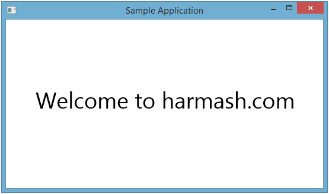

JavaFXنظرة عامة
هل أنا جاهز لتعلم JavaFX ؟
قبل أن تتعلم JavaFX يجب أن تتعلم الخوارزميات و لغة جافا للأسباب التالية:
لا تقلق إذا لم يسبق لك أن تعلمتهما لأننا شرحنا الخوارزميات و لغة جافا من الصفر.
تعلم الخوارزميات » تعلم لغة جافا »
إذاً تم إعداد هذه الدورة لتكون مرجعاً شاملاً لكل شخص تعلم الخوارزميات و لغة جافا من موقعنا و ينوي تعلم بناء تطبيقات سطح المكتب باستخدام المكتبة JavaFX.
ما هي JavaFX ؟
JavaFX هي مكتبة ضخمة جداً تم تطويرها لبناء تطبيقات فيها واجهة مستخدم بالإعتماد على لغة جافا.
باستخدام هذه المكتبة يمكنك تطوير تطبيقات تعمل على مختلف أنظمة التشغيل و مختلف الأجهزة مثل الكمبيوتر, الهاتف, التلفاز إلخ..
JavaFX جعلت المطورين قادرين على بناء تطبيقات قوية جداً بسرعة و سهولة لأنها توفر تقنيات جاهزة للمبرمج يمكنه إستخدامها في التطبيقات بدون أي تعقيد.
الصورة التالية عبارة عن واجهة مستخدم بسيطة جداً مبنية بواسطة JavaFX.

ميزات JavaFX
Java API
JavaFX هي مكتبة مبنية بلغة جافا و بالتالي يمكن إستخدامها في أي لغة برمجة تتنفذ بواسطة الـ JVM مثل اللغات Java, Groovy, JRuby.
FXML
FXML هي لغة توصيف (Markup Language) مبنية في الأساس على لغة XML, تم تصميمها خصيصاً لتستخدم في بناء واجهة المستخدم للتطبيقات المبينة باستخدام المكتبة JavaFX.
إذاً عند تصميم واجهة المستخدم يمكنك كتابة كود التصميم لكل نافذة في ملف FXML خاص فيها و تربطه فيها.
Scene Builder
عند تصميم واجهة المستخدم يمكنك كتابة كود الـ FXML بنفسك أو باستخدام برنامج الـ Scene Builder الذي يسمح لك بإضافة الأشياء بسهولة في النافذة.
برنامج الـ Scene Builder هو برنامج موجود ضمن برنامج الـ Netbeans. سنعلمك طريقة إستخدامه في نهاية هذه الدورة.
WebView
باستخدام تقنية الـ WebKitHTML يمكنك إضافة صفحات ويب في واجهة المستخدم. بداخل صفحات الويب هذه يمكن ربط كود الـ JavaScript الذي يمكن وضعه في صفحة الويب بكود لغة Java.
إذاً يمكن إستدعاء كود الـ JavaScript من كود الـ Java, و يمكن إستدعاء كود الـ Java من كود الـ JavaScript.
Swing interoperability
في حال كنت تبني برنامجك بالإعتماد على JavaFX و تريد إستخدام أشياء موجودة في مكتبة Swing فإنه يمكنك إضافتهم في التطبيق بدون أي مشاكل.
Built-in UI Controls
JavaFX تحتوي على أي شيء قد تحتاج إضافته في واجهة المستخدم.
CSS
لغة CSS تعتبر من أسهل اللغات على الإطلاق و هي تستخدم في تصميم صفحات الويب.
لذلك إذا كنت تعرف هذه اللغة يمكنك الإستفادة منها حيث أن JavaFX تتيح لك كتابة كود CSS لتطوير تصميم واجهة المستخدم بسهولة.
Canvas API
عبارة عن مكتبة جاهزة في JavaFX تسمح لك بالرسم مباشرةً في واجهة المستخدم.
Multitouch Support
JavaFX تدعم تقنية اللمس المتعدد إستناداً إلى قدرات الجهاز الذي تعمل عليه.
المقصود من هذا الكلام أنك في حال كنت تبني تطبيق لجهاز يحتوي على شاشة يمكن التحكم بها بواسطة اللمس ( Touch Screen ) فإنك قادر على تنفيذ أكثر من أمر في نفس الوقت.
فمثلاً إذا كان المستخدم يضع إصبع واحد على الشاشة تنفذ أمر محدد و إذا كان يضع إصبعين على الشاشة تنفذ أمر آخر أو أمرين في وقت واحد و هكذا.
Integrated Graphics library
JavaFX تحتوي على مكتبات جاهزة تدعم تقنيات رسم الـ 2D و الـ 3D.
High-Performance Media Engine
JavaFX تدعم صيغ الصور و الفيديوهات و الملفات الصوتية التي يمكن وضعها في صفحات الويب.
إذاً بشكل أساسي يمكن تشغيل أنواع الملفات التالية في واجهة المستخدم: MP4 - MP3 - PNG - GIF - JPG - JPS.
تاريخ JavaFX
بدأ مهندس البرمجيات كريس أوليفر ( Chris Oliver ) أثناء عمله في شركة See Beyond Technology Corporation بالعمل على مشروع قام بتسميته وقتها F3 اختصاراً لـ ( Form Follows Functions ). فكرة هذا المشروع الأساسية كانت توفير إطار جديد لبناء تطبيقات فيها واجهة مستخدم قوية فيها أغلب الأشياء التي قد يحتاجها المبرمج لبناء تطبيقاته.
في عام 2005 أصبحت شركة See Beyond Technology Corporation تابعة لشركة Sun Microsystems التي بدورها قامت بتغير إسم المكتبة التي بناها كريس إلى JavaFX و تولت تطوير هذه المكتبة بشكل مستمر حتى أنها أضافت عليها الكثير من التقنيات الجديدة.
في عام 2007 تم الإعلان رسمياً عن المكتبة JavaFX في مؤتمر JavaOne الذي يعقد كل سنة لمناقشة تقنيات جافا.
في عام 2008 تم تضمين المكتبة JavaFX في برنامج NetBeans. و بالتالي أصبح المبرمج قادراً على بناء تطبيقات JavaFX بكل سهولة من برنامج الـ NetBeans.
في عام 2009 أصبحت شركة Sun Microsystems تابعة لشركة Oracle.
إذاً المكتبة JavaFx تم تطويرها خلال عدة سنوات و تم إنشاء العديد من الإصدارات منها.
إصدار المكتبة الحالي في عام 2017 هو JavaFX 9.0.
هل طريقة بناء البرامج إختلفت من إصدار لآخر؟
نعم, فمثلاً إصدارات JavaFx التي صدرت قبل 2.0 كانت واجهتها تبنى بواسطة لغة خاصة إسمها JavaFX Script و التي لم تعد تستخدم على الإطلاق.
تهيئة بيئة التطوير
بالنسبة للبرنامج الذي ستحتاجه لبناء تطبيقات JavaFX, قم بتحميل آخر إصدار متوفر للـ JDK و برنامج Netbeans.
شرحنا طريقة تحميلهما و تنصيبهما خطوة خطوة ضمن شروحات لغة جافا في درس تهيئة بيئة التطوير »
إنتبه: تم تضمين مكتبة الـ JavaFX في الـ JDK 8 و الإصدارات الأحدث منه. إذاً في حال كنت تستخدم إصدار JDK أقدم من الإصدار الثامن فإنك ستجد أن المكتبة JavaFX غير متوفرة فيه. و بالتالي سيظهر لك خطأ تحت كل كود الذي تحاول كتابته لأن الكمبيوتر لم يستطع التعرف على الكود الذي كتبته. لذلك تأكد من أنك قمت بتحميل آخر إصدار متوفر.

 محرر الويب
محرر الويب نظام الألوان
نظام الألوان محول الوحدات
محول الوحدات محلل عناوين الشبكات
محلل عناوين الشبكات